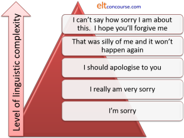

Teaching functional language

 |
Two definitions |
If you have followed the guide to form, function and meaning, you will be familiar with the fact that a functional approach to analysing language is one which:
starts from the understanding that language is primarily a tool for getting meaning across and that it is best analysed by looking at the functions bits of the language actually perform.
A functional view of language lies at the heart of a communicative approach to teaching it. Communicative Language Teaching is defined elsewhere on this site as:
an approach to teaching which focuses more on successful
communication than structural or formal accuracy. There are
two forms:
Weak form: in which the study of grammar is combined with a focus on
function but communicative competence remains the objective.
Strong form: in which there is no study of structure or form at all.
Competence in this area is deemed to flow from authentic language
use alone.
 |
a word of caution |
If you take the strong form of the approach, you may bewilder and
worry your learners, many of whom take the view that, although they
need above all to communicate effectively, learning the formal
structures, grammar, lexical systems and pronunciation of the
language is part and parcel of being able to do so.
They would not be alone in thinking so. As Widdowson puts it:
... language learning is essentially learning how grammar
functions in the achievement of meaning and it is a mistake to
suppose otherwise.
.... A communicative approach does not involve the rejection of
grammar. On the contrary, it involves a recognition of its central
mediating role in the use of and learning of language.
Widdowson (1990: 97/8)
Add in lexical systems and pronunciation and you have (probably) the majority view.
 |
Analysing functions |
This is not the place to repeat what has been said in the guide to form, function and meaning but two essential aspects stand out:
- Form and function do not exist in a one-to-one relationship. A single form can realise a number of functions and a single function can be realised in a number of linguistic ways.
- Functions rarely occur in isolation. Communication is a two-way process and the participants need to respond to the other person's functions with those of their own.
Think about those two statements a little and see if you can
exemplify what they mean.
Click here when you have done that.
- Form and function do not exist in a one-to-one relationship.
For example:- Can I get the plates?
is a question form which could function as:
A simple question: Do I have the ability or permission to get the plates?
An offer: I will get the plates for you.
A question about something else: Is it time to get the plates?
A statement as a reminder: We need the plates now.
A suggestion: Should the plates be got? - The function of disagreeing with an opinion can be
realised by:
Are you sure about that? (an interrogative)
I'm unconvinced (a statement)
Think that through a bit more (an imperative or order)
Doesn't that make it nonsense? (a negative question)
If you say so, I'll have to accept it but I'm still not too sure (a complex conditional)
That can't be true! (an exclamation with a modal auxiliary verb)
- Can I get the plates?
- Functions rarely occur in isolation. We have what are called adjacency pairs.
Offering is matched with accepting or declining, asking for information is matched with giving information, excusing oneself is matched by accepting or rejecting an excuse and so on.
For example, if someone makes a suggestion, such as Shall we go now?, there are three possible response types:- Agree to a suggestion: OK, let's get our coats.
- Reject a suggestion: I'm happy where I am, thanks.
- Temporise: Let's stay a little longer.
It becomes obvious that we can't teach functions one at a time. There is very little point in being able to make an offer if you can't understand or produce the possible responses.
 |
What to teach? |
Two key publications listing lots of functions are from the Council of Europe and are available on
the web:
Waystage 1990 by Van Ek and Trim
Threshold 1990 by Van Ek and Trim
When we are teaching structure or lexis, it is quite
straightforward to select by the level of the students what language
to teach, building on previous knowledge to extend our learners'
repertoire and lexicon. In other words, we teach the easy,
common stuff first and leave the hard grammar and lexis till later.
When it comes to choosing a function or set of functions to focus
on, however, things get more difficult because it is harder to state
that, e.g., apologising is more difficult than asking for directions
or greeting people is easier than asking for their opinion.
For example, even an apparently simple function such as saying sorry can be realised linguistically at various levels of complexity:

So, much depends on the language we teach to allow our learners to realise the function.
Because, as you know, there is no one-to-one relationship between form and function, this means that the same function may be addressed a number of times, each time extending and developing the amount of subtlety and sophistication in language use.
However, it is possible to have a rough idea about which functions should be taught at each level based on:
- how frequently they are likely to be needed and
- how complex the language is that we need to express the function
Here's a very rough guide related to the Common European Framework of language levels.
| A1 / A2 | B1 / B2 | C1/C2 |
| agreeing/disagreeing apologising/accepting apologies asking/talking about ability asking about/talking about likes and dislikes asking for/giving/refusing permission asking about/talking about plans asking for/giving information asking for/giving opinion asking about/talking about wants asking for/giving directions greetings introductions inviting/accepting/declining making/suggesting arrangements offering/accepting/declining offering/accepting help phatic statements saying goodbye suasion* thanking/accepting thanks |
accusing/denying/admitting arrangements asking/talking about intellectual attitudes asking for/giving opinion asking/talking about obligation attracting attention expressing degrees of certainty expressing degrees of gratitude expressing remorse/regret expressing deductions expressing sympathy expressing (dis)interest expressing hope expressing surprise expressing fear expressing forgetfulness making/confirming/suggesting alternative arrangements socialising formally suasion* suggesting/responding to suggestion warning |
beginning a meal correcting others expressing (dis)satisfaction expressing degrees of (dis)agreement expressing moral shock expressing indifference expressing desire expressing disappointment expressing worry expressing disbelief granting forgiveness inquiring whether invitation is accepted or declined inquiring about whether something is remembered proposing a toast suasion* recommending courses of action tact in declining |
As was said, this is a very rough guide indeed. There's no
doubt, for example, that learners at all levels may need many of the
functions, such as expressing disbelief, which are listed under more
advanced levels. It is also the case that learners' needs and
settings vary and what is appropriate to teach to one learner may be
unnecessary or inappropriate in another case.
It is, however, somewhere to start.
 |
Teaching functional language |
4 things to consider before you plan to teach
- The intentions of the participants
- Learners need to be aware of what they
want to do with the language.
Am I offering something, demanding something, asking for something, persuading someone or what?
There is a clear difference between interactional and transactional purposes.
However, where the dividing lines are and how the terms are used in the profession are not quite so clear.
Transactions have clear goals and often involve service encounters and communication in specific settings (shops, services, offices, factories etc.).
Interactions, on the other hand, are concerned with oiling social wheels and getting along with other people.
It is important to be aware that most encounters involve both kinds of language. Even when you are only buying a sandwich some of what is said will be purely interactional (greetings, expressions of gratitude, politeness forms etc.) and some will be purely transactional (expressing needs and wants, giving information about price etc.). - The context and setting
- You can't learn, use or understand language in a vacuum. Where people are talking and what they are doing are important data. For example, a conversation at work will differ from one in a café, a letter to a friend will differ from one to a landlord and so on.
- The relationships
- Who the people are, what the power relationships between them are and even what their ages and sexes are is important information.
- The medium
- Am I speaking, reading, texting, emailing, writing formally, scratching a quick note or what? All of these will affect what language I select and the style of what I say / write.
Think of examples of the way in which what we say is affected by these 4 considerations and then click here.
- The intentions of the participants
- Here are just two examples.
If I am asking for information, I have a number of means at my disposal.
I can, for example, use a question form such as
Do you have my address?
a question tag
You have my address, don't you?
a statement with rising intonation
You have my address?
and so on.
If I am making an offer, I can also select from a range of forms:
Can I help?
Let me help.
I'll help.
You can't do that alone.
and so on. - The context and setting
- Here the speaker / writer needs to consider style, i.e., the
level of formality which is appropriate:
Open the window.
Please open the window.
Do you mind if we have the window open?
I wonder if you could open the window.
Dear Bill,
Dear Mr Williams,
I am writing to enquire whether ...
Tell me ... - The relationships
- Style matters here, too but so does the level of directness
and the type of function which is even appropriate at all.
Boss to employee:
Come and see me tomorrow and talk about your holiday dates, will you?
Employee to boss:
Can you let me have a bit of time later on to discuss my holiday dates?
Employee to employee:
Let's sort out my holiday dates today. - The medium
- Spoken language tends, on the whole, to be less formal, come
in shorter chunks, be characterised by hesitation and false
starts, leaves understood information out and is less complex.
Writing is more complex, more coherent and includes all the
data. Prepared speech is more like written language spoken
aloud.
Spoken:
There's he is! That's him ... the man, I mean. He was in the pub yesterday, wasn't he? He .. err you spoke to ... to him. Well, had an argument really.
Written:
Do you remember the man you spoke to, or rather argued with, who was in the pub yesterday?
Here's a cut-out-and-keep overview. Click here if you would like a copy as a PDF file.

Presenting |
Spoken language is often presented via a dialogue (read
or heard) or some other kind of text. It can also be embedded
in interaction in the classroom. Whether this is done after
the learners have tried to express the target function for
themselves (a Test–Teach–Test approach) or at the outset (a
Present–Practise–Produce approach) is not our concern here.
Visuals or other aids help to make the setting clear but learners
still need the information under the 4 sections above to make sense
of the input.
At lower levels such dialogues can be pretty short and simple, along the lines of:
A tourist approaching strangers in the street.
- Excuse me, can you tell me where the Police Station is?
I'm sorry, I'm a stranger here.
Oh, well, thanks anyway. - Excuse me, can you tell me where the Tourist Information
Office is?
Err, I'm not too sure. I think it's in the station. Down there on the right but you should ask someone else. I may be wrong.
OK. I'll try that. Thanks. - Excuse me, can you tell me where the City College is?
Yes. It's just down here. Go to the end of the road, turn right and it's on your left.
Thanks.
This is a simple way to introduce how to use an indirect question to make a request for directions and the three ways to respond to it. The dialogues can be read, seen, heard or all three.
At higher levels, things can get a bit more sophisticated. For example,

What language in particular is being presented here? Click here when you have an answer.
A dialogue of this sort is intended to
highlight the way we use a bit of give and take in negotiations and
are careful to show we understand the other person's position with
phrases like
I can see it's difficult
I can see that's
tempting
I know it does.
It shows how we appeal to outside people and pressures (Julie
and Angela) to support our position.
It shows how we back up requests and statements with reasons, e.g.,
someone's asked me
they're pretty strict at the hospital
etc.
It also shows that the language we use when we are persuading
someone else to do something is slightly different from the language
we use when we are trying to get them to cooperate with us.
Compare, e.g.,
Could you ...
with
Let's ...
(There is more on this in the guide to
suasion.)
This whole exchange could, incidentally, be presented in written
form as a series of emails between John and Peggy. The medium
would change and with it the style but the functions would remain
the same.
It could then be contrasted with the way people talk to authority
figures by going on to present the conversation between Peggy, John
and Julie later that day.
 |
Practising |
Before learners can effectively and confidently produce language, it needs to be highlighted and practised. There are lots of ways to do this, including:
- Listening to and repeating parts of the dialogue, aping intonation and so on.
- Memorising the dialogue and acting it out together.
- Reading the dialogue in a way that makes one or other of the characters aggressive or meek.
- Using the dialogue as a model to construct one in a similar vein on a different subject.
- Practising small parts of the dialogue focusing on the
intonation and stress on the main verb in things like
I can see it's difficult
I can see that's tempting
I know it does.
or any combination of these and other ways.
Producing |
It isn't really difficult to set up a similar situation and then get the learners to do the negotiating. However, we must bear in mind that:
- the role relationships should be equal.
- the participants are not close friends.
- there are external pressures on both of them. We will need to identify what those pressures are, of course.
For example:
You share a flat with two friends and take it in turns to babysit once a week for your landlady (who reduces the rent). There are three roles (Learners A, B and C):
- It is your turn tomorrow. You have a new boy/girlfriend who has invited you out so you don't want to babysit. This is important to you.
- You know it is A's turn and you have done the babysitting for him/her twice this month already. You have an essay to write and want the evening to yourself.
- You are free tomorrow evening but you want to go to the cinema to see a film you have read about. The last night of the film is tomorrow.
This will have to be a carefully monitored exercise and the
learners will need time to prepare it together before they act it
out. They may need quite a lot of input and help.
Then they can try again with no preparation and different partners
(with the same or a different scenario). And again, probably.
It may seem a bit dull to you to do the same thing three or four
times but if you change the grouping and alter the scenario, it
won't be for your learners.
By the way, the learners may also need a nudge to realise that they
can agree to appeal to the landlady and see how important
babysitting actually is tomorrow (see the model dialogue and the
agreement to appeal to Julie).
| Related guides | |
| form, function and meaning | for the essential guide to the differences |
| suasion | for the guide to a particular type of function: getting other people to do things |
| requestives | for a guide in the in-service section to a teachable area of suasion |
| adjacency pairs | for a guide in the in-service section explaining what they are and supplying a list of common ones |
| the index to essential functions | for the index to this area in the initial plus section |
| the in-service functions index | this is where you will find links to more technical guides |
References:
Van Ek, J and Trim, J, Waystage 1990, Cambridge: Cambridge
University Press
Van Ek, J and Trim, J, Threshold 1990, Cambridge: Cambridge
University Press
Widdowson, H, 1990, Aspects of Language teaching, Oxford: Oxford
University Press
Wilkins, DA, 1972, Linguistics and
Language Teaching, London: Edward Arnold